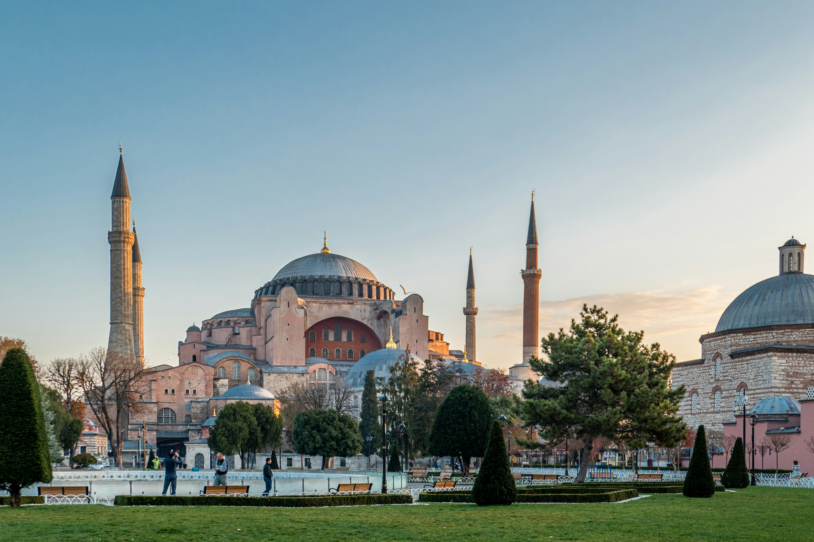
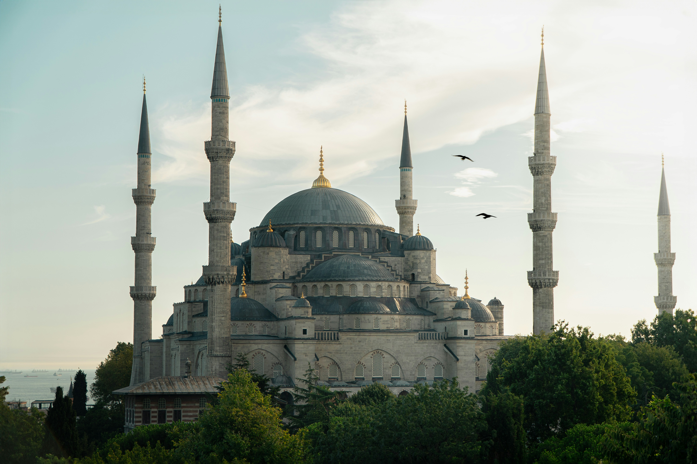

the old city's greatest hits.
Three landmarks within a 10-minute walk of each other. Go in this order, in the morning, before the cruise crowds dock.

01
Sultanahmet · 30 min visit
hagia sophia.
Over 1500 years old, one of the most famous holy sites in the world and the most photographed building in the city. Skip the audio guide and just walk it slowly. Don't forget to check out the mosaic upstairs!
visit page →
02
Sultanahmet · 20 min visit
the blue mosque.
Six minarets, twenty thousand İznik tiles, and free to enter. Bring a scarf if you're not wearing long sleeves; they hand them out at the door but the line is real.
visit page →

03
Beyazıt · 90 min wander
the grand bazaar.
4,000 shops under one roof, dating to 1461. Bring cash, haggle politely and at length, accept the tea. Get lost on purpose; you'll find the lokum stand sooner that way.
visit page →start here.
where next →
These are the sights. Check out the eats!